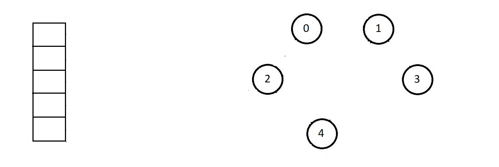
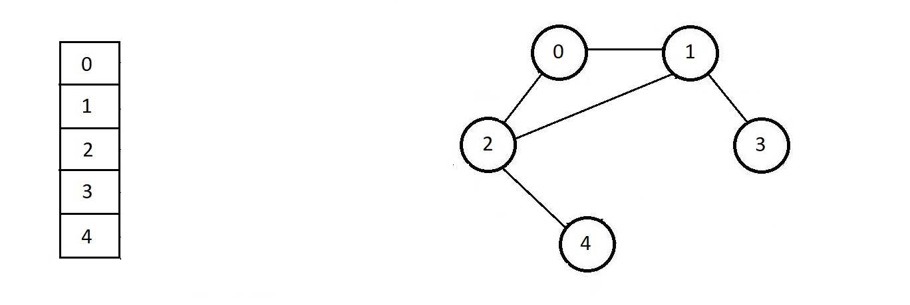
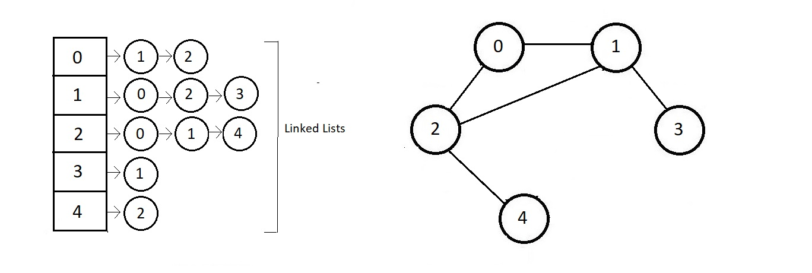
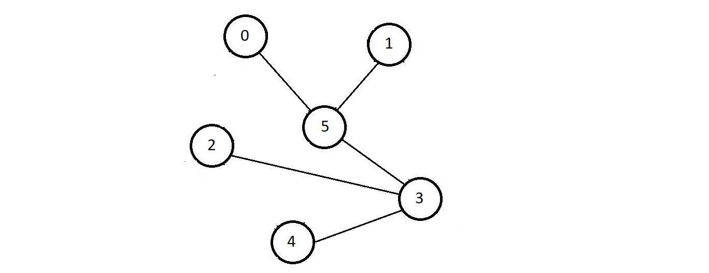
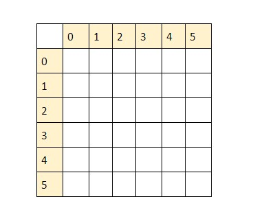
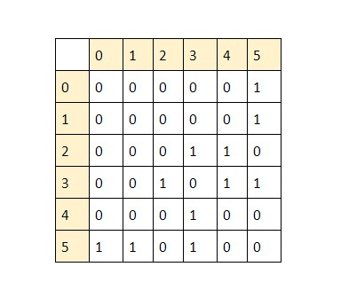
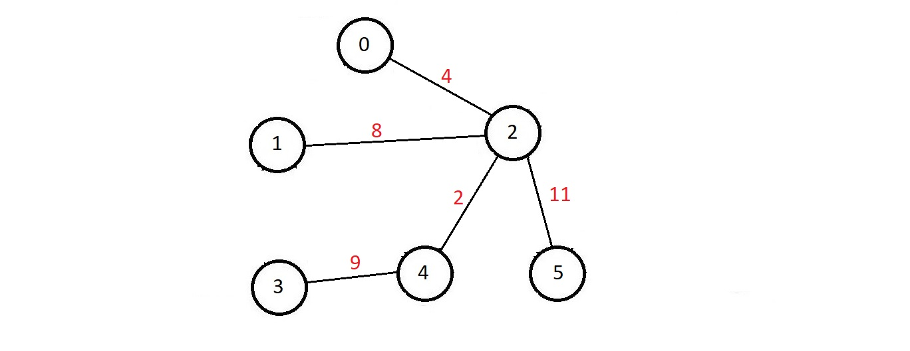
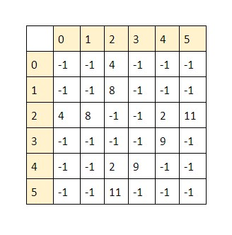

Representation of Graphs - Adjacency list, Adjacency matrix and other representations
Ways to represent a graph:
Any representation should basically be able to store the nodes of a graph and their connections between
them.
And this can be accomplished in so many ways but primarily the most used way to represent a
graph is,
- Adjacency List ↓
- Mark the nodes with their neighbours
- Adjacency Matrix ↓
- Aij = 1, if there is an edge between i and j, 0 otherwise.
- Edge set ↓
- Store the pair of nodes/vertices connected with an edge.
Example: {(0, 1), (0, 4), (1,
4)}.
- Other representations → compact list representation, cost adjacency list, cost adjacency
matrix, etc.
Adjacency List:
- In thismethod of representation of graphs, we store the nodes, along with list of their
neighbors.
- Basically, we maintain a list of all the nodes and along with it, we store the list of nodes a
particular node is connected with .
- Consider the nodes illustrated below

- So first, we store the nodes we have in the graph.

- Next, we look for the connections of each of these nodes we stored.
- Starting with 0
- 0 is connected with both 1 and 2.
- So, we will store that beside node 0.
- Next, 1 is conneced with all 0, 2 and 3
- 2 is connected with both 0 and 4
- 3 is connected with only 1
- and 4 is connected with only 2
- So, this information gets stored as shown below

- The information about the connections of each of the nodes gets stored in separate linked lists
- each of the nodes itself acts as a pointer stored in an array pointing to the head of each of
the linked lists. So, in this case, we would have an array of length 5 where the first index
stores a pointer to the head of the adjacency linked list of the node 0.
- And this was the adjacency list representation of graphs. This one if the most used
representation methods
Adjacency Matrix:
- Here we represent our graph in the form of matrix where cells are either filled with 0 or 1.
- consider the graph illustrated below

- NOw, we'll make a 6x6 matrix as follows:

- Iterate through each of the cells, and see if there is an edge between the row number and the
column number or not.
- If there is an edge, we'll place 1 in that cell, other wise a zero.

- Now, one can easily find whether there is an edge between any two nodes by simply looking for
the cell representing the two nodes and checking if there is a 1 or a 0.
We further extrapolate the application of the adjacency matrix by replacing these ones in the matrix
with weights for a weighted graph. Weighted graphs have a value/cost for each of the respective
edges. These costs could represent anything, be it distance or time or cost literally. There is one
traveling salesman problem where we store the shortest parth from a city to some other city. Let's
look at the cost adjacency matrix in detail.
Cost Adjacency Matrix
- The cost adjacency matrix is another method of representation of weighted graphs, where we
represented our graph is the form of a matrix
- Let the cell falling on the intersection of ith row and jth column be Aij, then the cell would
be filled with the cost of edge between node i and j if there is an edge between node i and j,
other the cell would be filled a 0 and if the cost could also 0, then we'll fill -1 in the cell
where there is no edge.
- Consider the graph illustrated below.

- Now, we'll make a 6x6 matrix as follows and iterate through each of the cells, and see if there
is an edge between the row number and the column number or not.
- If there is an edge, we'll place 1 in that cell, otherwise a zero.
- Since there is no self loops even, we'll mark 0 to the cell having i = j.
- The filled adjacency matrix for the above graph would be, assuming the cost could be zero as
well

- Other implementation are not that frequently used, so let's go through them quickly.
Edge Set:
- Store the pair of nodes/vertices connected with an edge.
- Example: {(0,1), (0, 2), (1, 2), (1, 2)} for a graph having nodes 0, 1 and 2 all connected with
each other.
Cost Adjacency List:
- Similar to the adjacenty list, but instead of just storing the node value, we'll also store the
cost of the edge too in the linked list.
Compact list representation
- Here, the entire graph is compressed and stored in just one single 1D array.
- This was all about representing graphs. We'll be mainly using the adjacency list and adjacency
matrix.